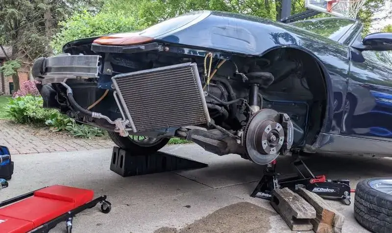

I am studying robotics engineering at Oakland University, and I'm a founding engineer at Skuno.
I also happen to be good at programming.
I volunteer for FIRST in Michigan, an organization that runs robotics programs for elementary through high school students. At competitions I help set up and troubleshoot the field, and over the years I've built a suite of software that events actually run on.
A mobile-friendly field monitor for FRC that's grown into a full toolkit for the people running an event. It tracks how long each robot has been disconnected, surfaces the right troubleshooting steps, and pulls match logs so they can be shared with a team in seconds. A checklist feature syncs across everyone's devices, so tracking which teams have had their radio programmed or passed inspection stays in one place. It's deployed behind a load balancer and used at real competitions.
The graphics package that goes up on the big screen at an event: match timers, rankings, brackets, sponsor reels, and victory sequences, all driven live off the field management system. It's built as swappable themes, so each competition gets its own look without forking the code. Used to run the audience display at multiple off-season events.
A drop-in emulator of the FRC Field Management System, written in Bun. It emits the same signals a real field does, so field-monitor and audience-display software can be built and tested without a five-figure field control cabinet or an actual event. A control panel lets you script match states and edge cases on demand.
The FRC community builds a lot of scattered one-off tools, so I built a home for them. FRC.Tools crawls and collects them into a single searchable directory of tools, calculators and apps for FRC, FTC and FLL teams. It also gathers event photo albums into one gallery per competition, maps practice fields teams can use in the off-season, lists off-season events, archives team robot code and CAD, and tracks grants teams can apply for.
Hosts a web page with live captions generated by either the Google Speech-to-Text API or April-ASR from an audio stream on the local machine. Multiple inputs can be added, each shown in its own color, with an adjustable threshold per input, so if you hold the mic away to talk but forget to mute it, that side conversation never lands on the screen.
An end-to-end encrypted time tracker. You log what you're doing each hour and it builds a private, searchable picture of where your time actually goes. Bun and tRPC on the backend with an Expo mobile app; everything is encrypted client-side, so the server never sees your plaintext.
An autonomous fantasy-football coach for Sleeper leagues. It drafts on your behalf with a live draft engine, announces its own picks out loud in a Discord voice channel, and trash-talks the other managers while it does it. Runs unattended from the first pick to the last.
An efficient Visual FoxPro DBF file parser written in TypeScript. It reads the binary of a DBF file and streams it out as row objects with an event-based interface. Based on abstractvector/node-dbf, but adds proper float and integer number types specifically for Visual FoxPro DBF files.

I restored a 2000 Porsche Boxster.I've been modifying a Makita DRC200 robot vacuum to be controlled by a Raspberry Pi. The Pi has a webcam that tracks AprilTags and follows a pre-programmed path while vacuuming, which beats the stock control system that often gets stuck or leaves areas uncleaned. Oh, and it streams its camera feed to YouTube. Did you expect any less?